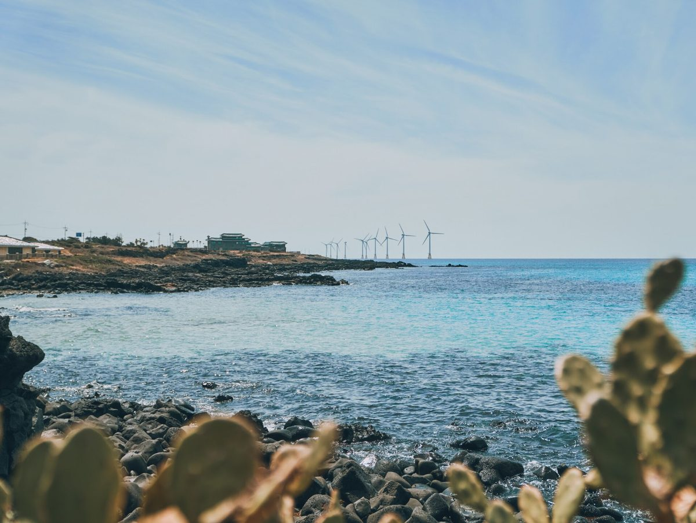

제주 한림해상풍력 주민 투자 300억 원 가운데 200억 원은 공단 정책융자…투자 배당과 도민 공공 환원을 나누자는 제안 나와

인근 3개 마을 주민 1,009명 협동조합 투자, 저리 융자 대상은 거리·거주 기간·어업권 피해로 제한…추자해상풍력 '주민 우선, 도민 확대' 구상엔 금융비용 격차·배당 소외 우려, 지역 일간지 기획 연재 마무리 제안
100MW급 제주 한림해상풍력에 인근 3개 마을 주민 1,009명이 협동조합 방식으로 모두 300억 원을 투자했는데, 이 가운데 200억 원은 한국에너지공단의 장기 저리 정책자금 융자로, 나머지 100억 원은 금융권 대출로 마련한 것으로 나타났다. 주민이 큰 자기자본 없이 발전 사업에 들어갈 수 있게 한 방식이지만, 공단의 저리 융자는 발전시설과의 거리, 거주 기간, 어업권 피해 여부 등에 따라 지원 대상이 정해져 있어 도민 누구나 같은 조건으로 쓸 수 있는 돈은 아니다. 제주도는 추자해상풍력의 개발이익 공유 방식을 고쳐 추자 주민에게 먼저 투자 기회를 주고 이어 도민 전체로 넓히는 방안을 구상하고 있으나, 추자 주민과 제주시·서귀포시 도민이 같은 조건으로 정책융자를 받을 수 있을지는 불확실하다. 이를 두고 제주 지역 일간지의 신재생에너지 기획 연재 마지막 회는 정책자금을 받지 못한 도민이 일반 대출로 투자하면 금융비용 차이만큼 수익 격차가 생기고 투자 여력이 없는 주민은 배당에서 빠질 수 있다며, 투자한 주민에게는 배당을 주되 별도의 제주 발전기금 같은 공공 환원 재원을 만들어 투자 여부와 관계없이 도민이 혜택을 받게 하자고 제안했다. 연재는 전남 신안군 햇빛연금을 참고 사례로 들고, 마을회나 주민협동조합이 공공시설 지붕과 유휴부지에 태양광을 세워 수익을 마을에 다시 쓰는 마을 단위 공동 발전을 늘리며 발전설비 유지·보수에 지역 기업과 인력을 참여시키자고 함께 주문했다. 또 한국전력이 제11차 장기 송변전설비계획(2024~2038년)에서 제주를 재생에너지 지속 증가 지역으로 분류했지만 설비 확충이 늦어 출력제어가 되풀이되고 있다며, 추자해상풍력의 주민 투자 구상도 육지 송전망 확보가 먼저라고 짚었다.
시민에너지 관점
한림 주민 투자 300억 원의 3분의 2가 공단 정책융자였고, 1,009명으로 나누면 한 사람에 평균 약 3,000만 원(우리 계산)이라는 숫자는 지금의 주민 참여가 사실상 '저리로 빌릴 자격'을 가진 사람에게 열린 제도라는 점을 보여 준다. 공공 환원 기금을 따로 두면 굳이 돈을 넣을 까닭이 줄어 주민 투자가 시들 것이라는 우려가 있을 수 있지만, 배당은 위험을 진 투자자의 몫이고 기금은 바람과 바다라는 모두의 자원에서 나온 몫이어서 둘은 서로를 대신하지 않고 받쳐 준다. 투자 여력이 없는 도민도 적은 돈으로 지분에 들어올 수 있게 공공이 출자 통로를 열고, 그 위에 남는 개발이익을 기금으로 모두에게 돌려야 제주의 바람이 소수의 배당이 아니라 도민 공동의 자산이 된다. 제주도는 추자해상풍력 개편안을 내놓을 때 투자 순위만이 아니라 정책융자를 추자 밖 도민까지 넓힐 근거와 공공 환원 기금의 몫을 함께 적어야 한다.
출처: 한라일보 2026-10-30 고대로 원문 보기
済州・翰林洋上風力の住民投資300億ウォンのうち200億ウォンは公団の政策融資…投資配当と道民への公共還元を分けるべきとの提案
近隣3集落の住民1,009人が協同組合で投資、低利融資の対象は距離・居住期間・漁業権被害で限定…楸子洋上風力の「住民優先、道民へ拡大」構想には金融コストの格差や配当から外れる懸念、地元日刊紙の企画連載最終回での提案
100MW級の済州・翰林（ハンリム）洋上風力には近隣3集落の住民1,009人が協同組合方式で計300億ウォンを投資したが、このうち200億ウォンは韓国エネルギー公団の長期低利の政策資金融資で、残る100億ウォンは金融機関からの借り入れで賄ったことがわかった。住民が大きな自己資金なしに発電事業に加われるようにした方式だが、公団の低利融資は発電施設からの距離、居住期間、漁業権被害の有無などによって支援対象が決まっており、道民の誰もが同じ条件で使えるお金ではない。済州道は楸子（チュジャ）洋上風力の開発利益共有の方式を見直し、まず楸子の住民に投資の機会を与え、その後道民全体に広げる案を構想しているが、楸子の住民と済州市・西帰浦市の道民が同じ条件で政策融資を受けられるかは不透明だ。これについて済州の地元日刊紙による新再生エネルギーの企画連載の最終回は、政策資金を受けられない道民が一般の融資で投資すれば金融コストの差だけ収益に格差が生じ、投資の余力がない住民は配当から外れかねないとして、投資した住民には配当を出しつつ、別に済州発電基金のような公共還元の財源をつくり、投資の有無にかかわらず道民が恩恵を受けられるようにしようと提案した。連載は全羅南道新安郡の「日差し年金」を参考例に挙げ、村の会や住民協同組合が公共施設の屋根や遊休地に太陽光を設けて収益を村に再投資する集落単位の共同発電を広げ、発電設備の維持・補修に地元企業と人材を参加させることもあわせて求めた。また韓国電力が第11次長期送変電設備計画（2024～2038年）で済州を再生可能エネルギーの継続増加地域に分類したものの、設備の拡充が遅れて出力制御が繰り返されているとして、楸子洋上風力の住民投資構想も本土への送電網の確保が先決だと指摘した。
市民エネルギーの視点
翰林の住民投資300億ウォンの3分の2が公団の政策融資で、1,009人で割ると1人あたり平均約3,000万ウォン（本紙の計算）になるという数字は、いまの住民参加が事実上「低利で借りられる資格」を持つ人に開かれた制度であることを示している。公共還元の基金を別に設ければ、わざわざお金を出す理由が薄れて住民投資がしぼむとの懸念もありうるが、配当はリスクを負った投資者の取り分であり、基金は風と海というみんなの資源から生まれた取り分であって、両者は互いを置き換えるのではなく支え合う。投資の余力がない道民も少額で持ち分に加われるよう公共が出資の窓口を開き、その上で残る開発利益を基金としてすべての人に返してこそ、済州の風は一部の人の配当ではなく道民共同の資産になる。済州道は楸子洋上風力の見直し案を示す際、投資の順位だけでなく、政策融資を楸子以外の道民にまで広げる根拠と公共還元基金の取り分をあわせて明記すべきだ。
出典: 漢拏日報（Halla Ilbo） 2026-10-30 コ・デロ 原文を読む
济州翰林海上风电居民投资300亿韩元中200亿来自公团政策贷款…有提议将投资分红与面向全体道民的公共返还分开
周边3个村庄1,009名居民以合作社方式投资，低息贷款对象按距离、居住年限和渔业权受损情况限定…楸子海上风电"居民优先、再扩大到道民"构想面临融资成本差距和分红排斥的担忧，为当地日报系列报道收官篇的建议
100MW级的济州翰林海上风电场周边3个村庄的1,009名居民以合作社方式共投资300亿韩元，其中200亿韩元来自韩国能源公团的长期低息政策资金贷款，其余100亿韩元为金融机构贷款。这种方式让居民无需大量自有资金也能参与发电项目，但公团低息贷款的支持对象按与发电设施的距离、居住年限、渔业权是否受损等条件确定，并不是每位道民都能以同等条件使用的资金。济州道正构想调整楸子海上风电的开发收益共享方式，先向楸子居民提供投资机会，再扩大到全体道民，但楸子居民与济州市、西归浦市道民能否以同等条件获得政策贷款仍不确定。对此，济州一家地方日报的新能源系列报道在收官篇中提出，得不到政策资金的道民若靠一般贷款投资，融资成本的差距会造成收益差距，没有投资能力的居民则可能被排除在分红之外；因此建议在向投资居民分红的同时，另设济州发电基金之类的公共返还财源，让道民无论是否投资都能受益。该系列以全罗南道新安郡的"阳光年金"为参考案例，并呼吁扩大由村会或居民合作社在公共设施屋顶和闲置土地上建设太阳能、将收益再投入村庄的村级共同发电，同时让本地企业和人员参与发电设备的维护保养。报道还指出，韩国电力公社在第11次长期输变电设备计划（2024至2038年）中将济州列为可再生能源持续增长地区，但设备扩充滞后，弃电限电反复发生，楸子海上风电的居民投资构想也须先确保通往本土的输电网。
市民能源视角
翰林居民投资的300亿韩元中三分之二是公团政策贷款，按1,009人平均每人约3,000万韩元（本报计算），这组数字说明，目前的居民参与实际上是向具备"低息借贷资格"的人开放的制度。有人担心另设公共返还基金会削弱出资的动力，使居民投资萎缩；但分红是承担风险的投资者应得的部分，基金则是来自风与海这一公共资源的部分，两者并非相互替代，而是相互支撑。只有由公共部门开辟出资渠道，让没有投资能力的道民也能以小额入股，再把剩余的开发收益通过基金返还给所有人，济州的风才会成为全体道民的共同资产，而不是少数人的分红。济州道在公布楸子海上风电调整方案时，不应只规定投资顺序，还应一并写明将政策贷款扩大到楸子以外道民的依据以及公共返还基金所占的份额。
来源: 汉拏日报（Halla Ilbo） 2026-10-30 Ko Dae-ro 查看原文
Of 30 billion won invested by residents in Jeju's Hallim offshore wind farm, 20 billion came from a state agency's policy loans, prompting a proposal to separate investor dividends from public returns to all islanders
1,009 residents of three nearby villages invested through a cooperative, but low-interest loans are limited by distance, length of residence and fishing-rights damage; the province's "residents first, then all islanders" plan for Chuja offshore wind raises worries about financing-cost gaps and people left out of dividends, says a proposal closing a local daily's series
In the 100MW-class Hallim offshore wind farm off Jeju, 1,009 residents of three nearby villages invested a total of 30 billion won through a cooperative, and 20 billion won of that came from long-term, low-interest policy loans from the Korea Energy Agency while the remaining 10 billion won was borrowed from commercial lenders. The arrangement let residents join a generation project without large amounts of their own capital, but the agency's low-interest loans are restricted by distance from the facility, length of residence and whether fishing rights were harmed, so they are not money every Jeju resident can use on the same terms. Jeju Province is considering revising how development profits are shared in the Chuja offshore wind project by giving Chuja residents the first chance to invest and then opening it to all islanders, but it is uncertain whether Chuja residents and people in Jeju City and Seogwipo City could get policy loans on the same terms. On this point, the final instalment of a renewable energy series in a Jeju daily newspaper proposed that, because islanders without policy loans who invest with ordinary bank loans would see their returns shrink by the difference in financing costs and residents with no money to invest could be left out of dividends, investors should receive dividends while a separate public-return source such as a Jeju generation fund is created so islanders benefit whether or not they invest. The series pointed to the sunlight pension in Shinan County, South Jeolla, as a reference, and also called for expanding village-level community generation in which village associations or resident cooperatives put solar on public building roofs and idle land and reinvest the income locally, and for involving local firms and workers in maintaining generation equipment. It added that although KEPCO classified Jeju as a region of continuously growing renewables in its 11th long-term transmission and substation plan (2024-2038), slow grid expansion has led to repeated curtailment, and said a transmission link to the mainland must come first before any resident investment plan for Chuja can take shape.
Citizen Energy View
Two-thirds of Hallim residents' 30 billion won stake came from policy loans, and divided among 1,009 people it averages about 30 million won each (our calculation), figures showing that resident participation today is in practice a scheme open to those who qualify to borrow cheaply. Some may worry that a separate public-return fund would weaken the reason to put money in and make resident investment wither, but dividends are the share of investors who took on risk while a fund is the share that comes from wind and sea that belong to everyone, so the two support rather than replace each other. Only if the public sector opens a channel for islanders without savings to buy small stakes, and then returns the remaining development profits to everyone through a fund, will Jeju's wind become a shared asset of all islanders rather than dividends for a few. When Jeju Province presents its revised plan for Chuja offshore wind, it should set out not only the order of investment but also the basis for extending policy loans to islanders beyond Chuja and the share going to a public-return fund.
Source: Halla Ilbo 2026-10-30 Ko Dae-ro Read the original